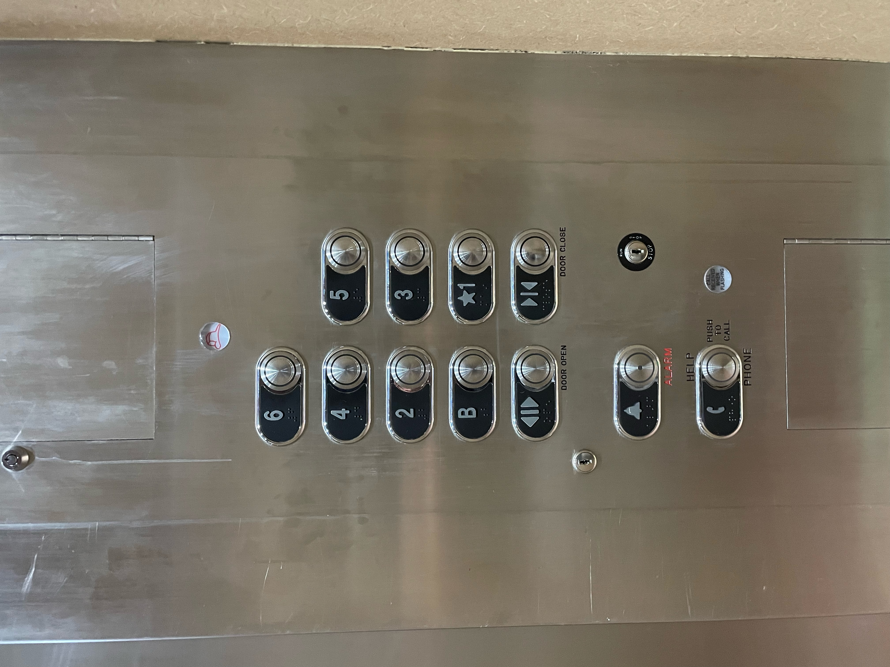
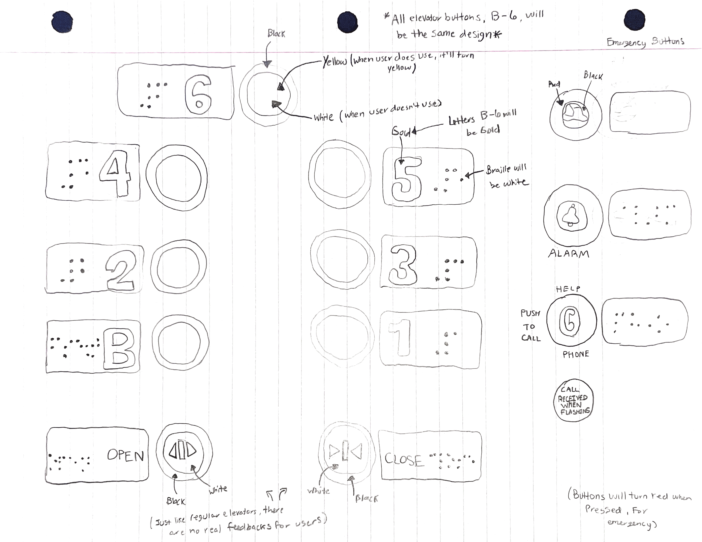
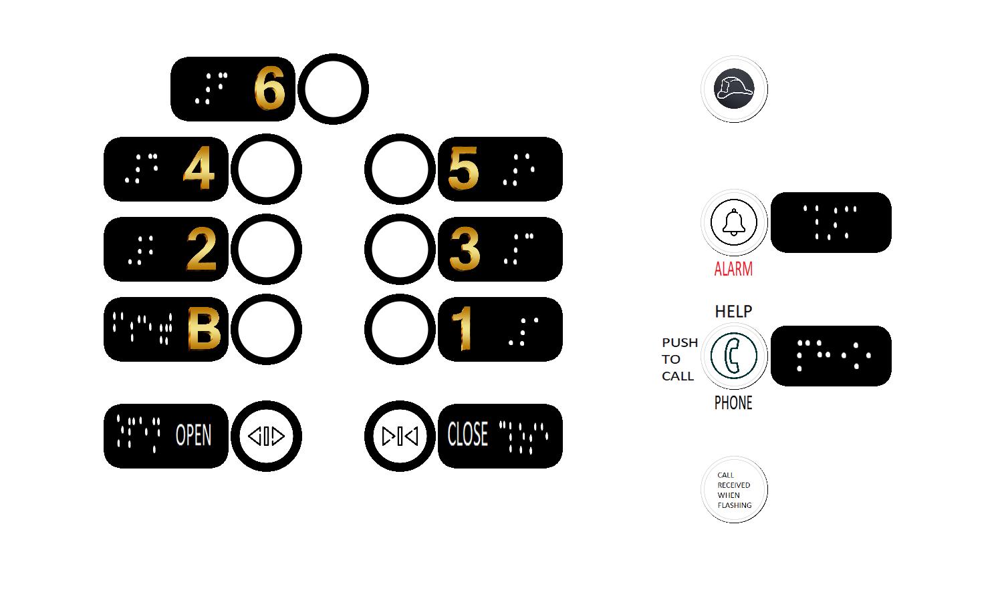

To get a C, you need to:
1. Find an elevator in the apartment/hotel/airport. Only one example for each student.
2. Take photos of the control interface
3. Show a gif image of the control interface in operation.
4. Find the issues with the current design.
5. Explain why it is good/bad.
1. The elevator in which I found was within my residence hall, a bigger residence hall than anticipated as there are 6 floors along a basement.
2. Photo of the Control Interface:
3. Gif/Video of Control Interface in Operation:
3. Gif/Video of Control Interface in Operation:
4. Issues with Current Design:
a) Emergency Buttons scattered on the panel
b) Rings will lights up when button pressed, small amounts of light
c) Door Open and Door Close buttons in general: Small letterings and people could get confused still, use big letters to let people differentiate
5. Explain why it is good/bad:
Good
a) Nice colors
b) Symmetrical
c) Everything lights up
Bad
a) Key locks scattered as well
b) Numbers could be centered too
To get a B, you need to:
1. Think about the common things that you use an elevator. List your most common uses and other more rare uses. Does the interface make doing those common things easier?
2. Think about how the user interacts with the elevator. What is the common sequence of actions?
3. How does the elevator support the user to figure out how to make it work?
4. How does the elevator provide feedback to the user?
5. What are some common mistakes you can make with this current design?
6. Suggest the improvements to make on the control interface. Sketch your solution. And justify your design decisions.
1. Think about the common things that you use an elevator. List your most common uses and other more rare uses. Does the interface make doing those common things easier?
a) Common Uses: Open, Closes, Your Floor, Ground Floor
b) Rare Uses: Emergency Buttons, Key Slots
c) Does the interface make doing those common things easier? Your common floor should be relatively the same, but yes, for open and closing the door, it should be easier!
2. Think about how the user interacts with the elevator. What is the common sequence of actions?
a) My common sequence of actions: Call outside panel (if needed), step inside elevator, press the close elevator button, press the 4th Floor button on the elevator panel, wait in the elevator, if others have to get off, keep pressing the close button, get off on my floor
3. How does the elevator support the user to figure out how to make it work?
a) If a user is blind for example, they will be able to have braille next to the buttons.
b) There is clear numbering and lettering to let users know what the buttons represent.
4. How does the elevator provide feedback to the user?
a) There is a red ring around the button when the button is pressed.
b) When you press an emergency button, your hear a loud ring sound (don't ask me how I know).
c) There is a *ding* sound when you have arrived to your floor.
5. What are some common mistakes you can make with this current design?
a) Numbering sizing can be uneven.
b) Braille can be too small; make plates, buttons, and brailler bigger.
c) Confusion with open and close buttons.
6. Suggest the improvements to make on the control interface. Sketch your solution. And justify your design decisions.
Sketch of My Control Interface:
Design Decisions
a) Bringing the 6th Floor in the middle in order to make it look cleaner.
b) Vertically place the Emergency Buttons together to make sure they are in one place.
c) Open and Close Buttons are more clear with having their labels in the middle of their buttons and words on their plates.
d) Changing floor button lighting to Yellow and Emergency Button lighting up Red.
To get a A, you need to:
Come with your design for the touch screen? What is the screen size that you want?
Design and implement interactive features.
Design and implement user feedback.
You use Processing for this project.
1. Come with your design for the touch screen? What is the screen size that you want?
a) 1500 by 900 is the scren size I chose for this panel.
2. Design and implement interactive features.
a) Some interactive features include: If a person is blind, they can interact with the plates by feeling which is which to indicate what to press.
3. Design and implement user feedback.
a) Some user feedback includes: Button lighting up when they are pressed to indicate the floor is being called, as well as the emergency buttons will be lit for when they are called, doors will open/close when you use press the button when it is time.
You use Processing for this project.
a) This project has been done is Processing.
Click this button to download the zip folder for my project!
Photo of My Control Interface I have created using Processing:
Video of Operating my Interface in Processing:
You can get extra credits if:
1. Your design supports people with disabilities.
2. You provide extra useful information on the display interface.
3. Your imagination ...
1. Your design supports people with disabilities.
a) I have include braille for all floor within my panel, along with all emergency buttons as well.
2. You provide extra useful information on the display interface.
b) I have provided more information for the Open and Close buttons to make sure users don't have trouble differentiating which is which..
3. Your imagination ...
c) Trying to make a more organized yet eye-catching panel to make sure users will like the interface they user everyday.